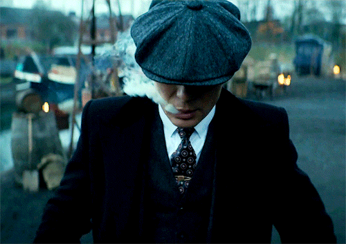

Thomas Shelby

Thomas Michael Shelby é um personagem fictício e o principal protagonista do drama criminal do período britânico Peaky Blinders. Ele é interpretado pelo ator irlandês Cillian Murphy, que ganhou o Irish Film & Television Award e o National Television Award por sua interpretação de Shelby. O personagem recebeu elogios da crítica. O diretor Steven Knight escalou Murphy para o papel de Tommy Shelby. O personagem é um veterano da Primeira Guerra Mundial de uma família diddicoy baseada em Birmingham. Em 1919, somos apresentados a Shelby e a história gira em torno de seu romance com Grace e seu conflito com o inspetor Campbell. O relacionamento de Shelby com Alfie Solomons é um elemento-chave de muitas das histórias de Peaky Blinders.

Cillian Murphy expressou interesse em fazer mais papéis na televisão, "Aqueles icônicos programas americanos estavam no ar e nós os assistíamos e todos estavam meio cientes disso. Acho que a BBC estava ciente disso, então eu estava ansioso para ler algumas boas scripts e eles [Peaky Blinders] foram os primeiros scripts de TV que recebi." Murphy admitiu que não sabia quem eram os Peaky Blinders quando o script foi inicialmente apresentado.[1] Jason Statham foi inicialmente preferido para o papel pelo diretor Steven Knight, que explica "Eu conheci os dois em LA para falar sobre o papel e optei por Jason. [...] Cillian, quando você o conhece, não é Tommy, obviamente, mas fui estúpido o suficiente para não entender isso." Knight então optou por escalar Murphy depois de receber uma mensagem de texto de Murphy que dizia "Lembre-se, eu sou um ator".[2]
Ao ritmo que a série ficou popular na internet, Thomas Shelby passou a ser descrito de forma simples: frio e calculista. A piada, porém, não é tão longe assim da realidade. O gângster têm um certo talento para a violência – afinal, é um veterano da Primeira Guerra Mundial -, mas seu foco é a negociação, o diálogo e uma boa estratégia.